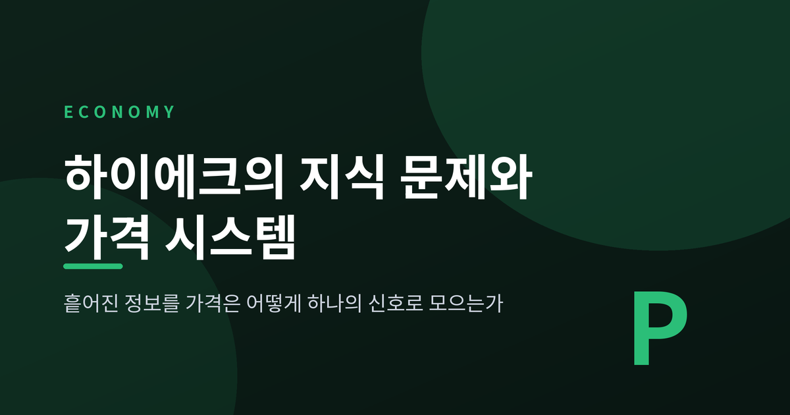
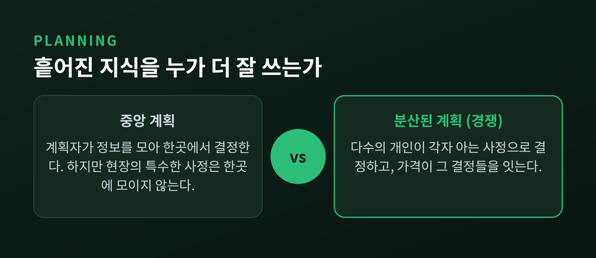
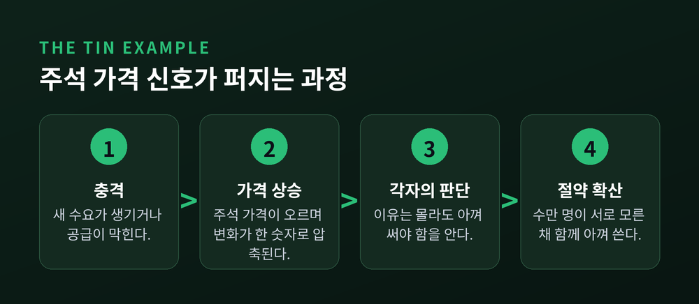
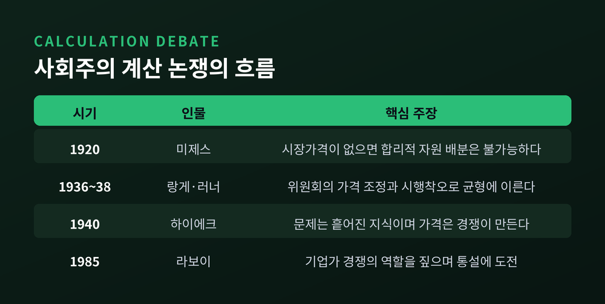
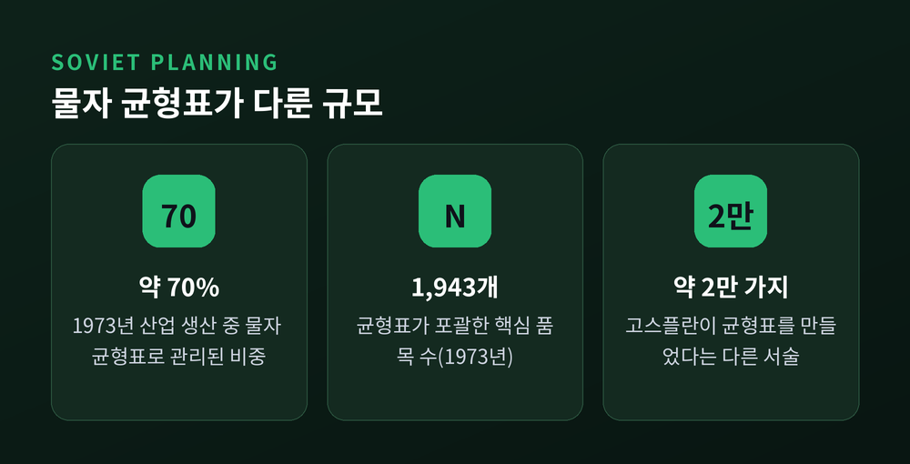
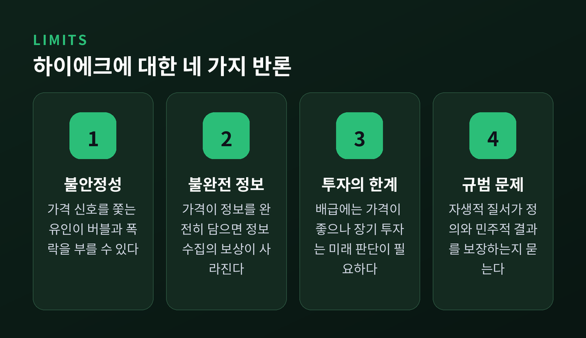

오늘은 하이에크의 지식 문제와 가격 시스템에 대해 이야기해 보려 합니다.
1945년의 짧은 논문 한 편이 던진 질문은 이렇습니다. 아무도 전체를 알지 못하는 경제가 어떻게 돌아가는가.
답의 열쇠는 가격이었고, 이 글은 그 논리와 한계를 함께 살펴봅니다.
하이에크의 논문 「사회에서의 지식의 활용」은 1945년 9월 『American Economic Review』에 실렸습니다.
그는 경제 문제를 이렇게 다시 정의합니다. 주어진 자원을 어떻게 배분하느냐가 아니라, 누구에게도 전체로서 주어져 있지 않은 지식을 어떻게 활용하느냐라는 것입니다.
예전엔 자원과 선호가 모두 알려져 있다고 가정하고 최적 배분을 계산했습니다. 하이에크는 그 전제부터 의심했습니다.
그가 주목한 것은 "시간과 장소의 특수한 사정에 대한 지식"입니다.
어느 창고에 재고가 남았는지, 어느 기계가 오늘 놀고 있는지, 어느 고객이 곧 떠날 것 같은지.
이런 지식은 통계표에 오르지 않습니다. 하이에크의 표현으로는 집중된 형태가 아니라 흩어진 조각으로만 존재합니다.
한 사람 한 사람이 다른 누구도 갖지 못한 정보를 쥐고 있다는 뜻이기도 합니다.
계획의 의미도 달라집니다. 구체적 의미의 계획은 중앙 계획을 가리키고, 경쟁은 다수의 개인이 나누어 하는 분산된 계획입니다.
결국 쟁점은 어느 쪽이 흩어진 지식을 더 잘 쓰느냐로 좁혀집니다.

하이에크가 든 대표 사례는 주석입니다.
주석에 새 수요가 생기거나 공급원 하나가 사라졌다고 해 봅시다.
주석을 쓰는 사람들이 알아야 할 것은 단 하나, 자신이 쓰던 주석 일부가 이제 다른 곳에서 더 유익하게 쓰인다는 사실입니다.
왜 그런지는 알 필요가 없습니다. 가격이 올랐다는 것만 알면 아껴 쓰게 됩니다.
하이에크는 가격 체계를 '변화를 기록하는 기계', 일종의 전신 체계에 비유했습니다.
그가 말한 경이로움은 이렇습니다. 신원을 몇 달 조사해도 다 찾을 수 없는 수만 명이, 서로 모른 채, 옳은 방향으로 움직인다는 것입니다.
여기서 가격이 하는 일은 정보를 압축하는 것입니다.
수요가 늘었는지, 광산이 닫혔는지, 운송이 막혔는지는 가격 하나로 접힙니다.
각자는 복잡한 사정 대신 '비싸졌다'는 한 줄만 받습니다.

이 논문은 앞선 논쟁의 연장선에 있습니다.
1920년 미제스는 「사회주의 공동체에서의 경제 계산」에서, 자본재 시장과 시장가격이 없으면 계획자가 합리적으로 자원을 배분할 수 없다고 주장했습니다.
반격은 1936~37년에 나왔습니다. 랑게와 러너의 시장 사회주의 모형입니다.
중앙계획위원회가 가격을 정하고, 국영 기업 관리자는 한계비용이 가격과 같아지도록 생산합니다.
재고가 쌓이면 가격을 내리고 모자라면 올리는 시행착오로 균형을 찾는다는 구상입니다.
러너의 1938년 저작이 랑게의 수정에 영향을 주어, 이 모형은 '랑게-러너 모형'으로 불립니다.
하이에크는 문제의 성격을 바꾸어 대응했습니다.
계산이 얼마나 복잡한가가 아니라, 흩어지고 암묵적이며 끊임없이 바뀌는 지식을 어떻게 얻는가가 핵심이라는 것입니다.
시장가격은 경쟁하는 기업가들의 역동적 경쟁에서 나오는데, 랑게가 기댄 완전경쟁 균형 모형에는 이 과정이 빠져 있다고 보았습니다.
평가는 엇갈립니다. 2차 대전 이후 경제학계는 1980년대까지 대체로 랑게-러너가 이겼다고 보았고, 1985년 돈 라보이의 저작이 이 통설에 도전했습니다.
브라이언 캐플란은 미제스가 사회주의의 '불가능'을 증명한 것은 아니며 인센티브와 혁신이 더 큰 문제라고 봅니다.
컴퓨팅으로 계획이 가능하다는 코크쇼트와 코트렐의 주장도 있으나, 그 체계가 결국 시장을 다시 끌어들인다는 반박을 받습니다.

실제 계획경제는 어땠을까요.
소련은 1973년 산업 생산의 약 70%를 물자 균형표로 관리했고, 그 대상은 경제에서 가장 중요한 1,943개 품목이었습니다.
균형표는 고도로 집계되어 부정확했고, 그 결과 만성적인 공급 문제가 따라왔다는 평가가 있습니다.
다른 자료는 고스플란이 거의 2만 가지 상품의 균형표를 만들었다고 적고, 가격과 생산이 연초에 정해져 다음 해까지 굳어 있었다고 전합니다.
두 수치가 다른 것은 기준 시점과 범위가 다르기 때문으로 보이나, 확인되지는 않습니다.
한 가지는 분명합니다. 수천 개에서 수만 개에 이르는 품목을 중앙에서 맞추는 일은 가격이라는 분산 장치 없이 쉽지 않았다는 점입니다.

가격이 만능이라는 이야기는 아닙니다. 반론도 만만치 않습니다.
첫째, 불안정성입니다. 볼스·키르만·세티의 2017년 논문은 가격의 정보 가치가 신호에서 정보를 뽑아내려는 유인을 만들고, 이것이 버블과 폭락으로 이어질 수 있다고 지적합니다.
하이에크의 경제 분석과 정치철학은 한 묶음으로 받아들일 필요가 없다는 것이 이들의 결론입니다. 북유럽 국가들이 하이에크가 반대한 정책을 쓰면서도 역동성을 유지했다는 근거도 듭니다.
둘째, 정보의 불완전성입니다. 1980년 그로스먼과 스티글리츠는 가격이 정보를 완전히 반영한다면 정보를 모을 이유가 사라져 시장이 무너진다고 보였습니다.
가격은 정보를 완벽히 담을 수 없고, 그래서 정보 수집이 보상받는다는 역설입니다.
셋째, 가격만으로는 부족하다는 비판입니다. 줄리어스 크라인은 주석 구매자가 가격이 오른 이유를 알아야 헤지나 대체를 판단할 수 있다고 말합니다.
배급에는 가격이 잘 듣지만 자본 투자에는 미래에 대한 판단이 필요하고, 외국 정부의 보조금 같은 개입도 가격에 섞여 전달된다는 것입니다. 다만 이는 보수 성향 정책 매체의 주장이라는 점을 감안해야 합니다.
넷째, 규범의 문제입니다. 센과 앤더슨은 자생적 질서가 정의롭거나 민주적인 결과를 보장하느냐고 묻고, 페티트는 시장이 지배와 착취적 위계를 막지 못한다고 봅니다.

계산 능력이 늘면 이야기가 달라질까요.
에벨링은 AI가 아무리 강력해도 하이에크의 지식 문제를 대체하지 못한다고 주장합니다.
새로운 사정의 발견은 사람이 앞서고, 수량화되지 않는 질적 지식이 있다는 이유입니다. 이는 한 논자의 견해이며 논쟁은 계속되고 있습니다.
정리하면 이렇습니다.
하이에크는 경제를 '자원을 나누는 문제'에서 '흩어진 지식을 쓰는 문제'로 바꾸어 놓았습니다.
1974년 뮈르달과 함께 노벨 경제학상을 받은 사유에도 경제·사회·제도 현상의 상호의존에 대한 분석이 들어 있습니다.
그의 통찰은 지금도 유효하지만, 정책 결론까지 한 묶음으로 받을 필요는 없다는 시각도 힘을 얻고 있습니다.
가격은 아무도 전체를 모르는 경제를 움직이는 가장 짧은 문장이다.
가격을 믿어야 하느냐고 물으신다면, 이렇게 답하겠습니다. 신호로는 귀 기울이되 판결문으로는 읽지 않겠다고요.